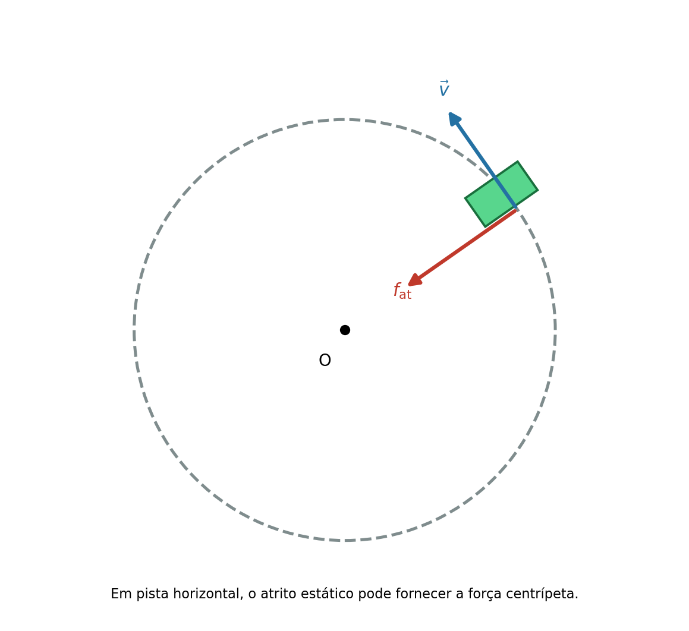
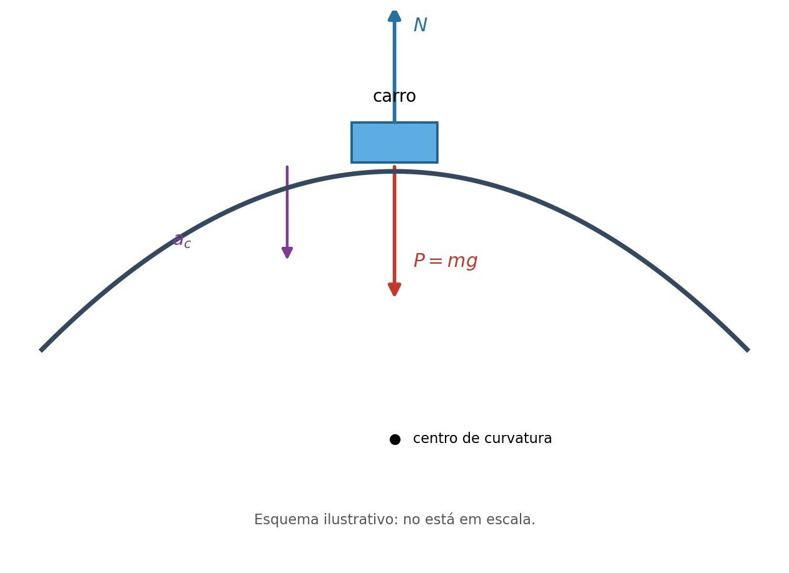
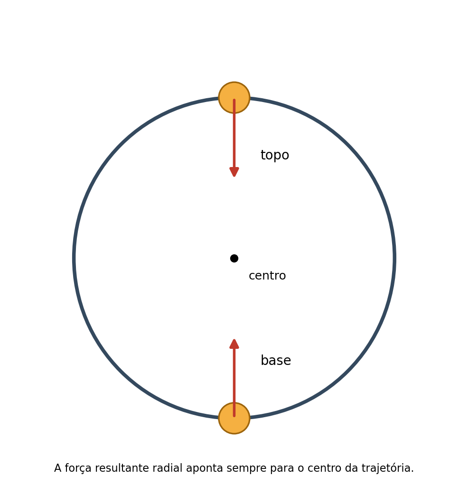

Na dinâmica do movimento circular, a aceleração centrípeta exige uma força resultante radial, dirigida para o centro da trajetória. Essa força não é uma nova interação: é o nome dado à resultante das componentes radiais das forças reais que atuam no corpo.
Para um corpo de massa $m$, velocidade escalar $v$ e trajetória circular de raio $R$:
Em cada situação, identifique as forças reais — peso, normal, atrito, tração — e projete-as na direção radial. A força centrípeta é a resultante dessas componentes, não uma força adicional no diagrama.
📖 Dinâmica no Movimento Circular
1. Por que é necessária uma força centrípeta?
Mesmo quando o módulo da velocidade é constante, o vetor velocidade muda continuamente de direção em uma trajetória circular. Essa variação produz uma aceleração dirigida para o centro, denominada aceleração centrípeta:
$$a_c=\frac{v^2}{R}=\omega^2R$$
Pela 2ª Lei de Newton, a componente radial da força resultante deve ser:
O sentido positivo radial será escolhido, em cada problema, para o centro da circunferência. A equação é uma aplicação da 2ª Lei de Newton na direção radial. Não significa que exista uma força física independente chamada “força centrípeta”.
2. Forças que podem atuar como resultante centrípeta
A força centrípeta pode ser fornecida, total ou parcialmente, por diferentes forças reais:
Tração: em uma pedra presa a um fio, a tração pode apontar para o centro e fornecer a resultante radial.
Força de atrito: em um automóvel fazendo curva em pista horizontal, o atrito estático entre pneus e pista pode fornecer a força centrípeta.
Força normal: em pistas curvas, trilhos e loopings, a normal pode ter componente radial.
Peso: em movimentos circulares verticais, o peso contribui para a resultante radial.
Combinações: frequentemente, mais de uma força possui componente radial. Todas devem ser somadas vetorialmente.
Não desenhe uma seta extra chamada $F_c$ no diagrama de forças se já desenhou as forças reais. Em vez disso, escreva a soma das componentes radiais igual a $mv^2/R$.
3. Curva em pista horizontal
Considere um carro fazendo uma curva plana, de raio $R$. No plano vertical, peso $P=mg$ e normal $N$ se equilibram. Na direção horizontal radial, o atrito estático aponta para o centro e fornece a resultante centrípeta:
$$f_{\mathrm{at}}=m\frac{v^2}{R}$$
Como o atrito estático máximo vale $f_{\mathrm{at,max}}=\mu_eN$ e, na pista horizontal sem aceleração vertical, $N=mg$, a condição para não derrapar é:
Essa velocidade máxima é válida no modelo de pista horizontal, com atrito estático de coeficiente $\mu_e$ e sem outras forças horizontais relevantes. Se a velocidade exigida superar esse limite, o atrito disponível não será suficiente para manter a trajetória circular.

Figura 1: Em uma curva horizontal, o atrito estático pode atuar como força resultante centrípeta, apontando para o centro da trajetória.
4. Veículo no topo de uma ponte convexa
No ponto mais alto de uma ponte convexa, o centro de curvatura está abaixo do veículo. Assim, a direção radial positiva é vertical para baixo. O peso aponta para baixo e a normal da pista aponta para cima:
$$mg-N=m\frac{v^2}{R}$$
Logo, a força normal é:
$$\boxed{N=m\left(g-\frac{v^2}{R}\right)}$$
A normal representa a intensidade da força de contato da pista sobre o veículo. Para que o carro permaneça em contato com a pista, é necessário $N\geq0$. No limite de contato, $N=0$, e a velocidade correspondente é:
$$\boxed{v_{\mathrm{limite}}=\sqrt{gR}}$$
Esse resultado é para o topo de uma ponte circular convexa idealizada. Não deve ser confundido com a velocidade máxima em uma curva plana com atrito.

Figura 2: No topo da ponte, o peso aponta para o centro de curvatura e a normal aponta no sentido oposto.
5. Movimento circular vertical: fio e looping
Em uma trajetória circular vertical, o centro da circunferência pode estar acima ou abaixo do corpo, dependendo da posição. A resultante radial aponta sempre para o centro.
No ponto mais baixo: o centro está acima do corpo. Para um corpo preso a um fio, a tração aponta para cima e o peso para baixo:
$$T-mg=m\frac{v_{\mathrm{baixo}}^2}{R}$$
No ponto mais alto: o centro está abaixo do corpo. Tanto a tração quanto o peso apontam para baixo:
$$T+mg=m\frac{v_{\mathrm{alto}}^2}{R}$$
Para um corpo completar uma volta mantendo o fio esticado, a tração não pode ser negativa. No ponto mais alto, a condição limite é $T=0$, portanto:
Essa é a velocidade mínima no topo para o fio permanecer apenas esticado. Em um looping rígido, a condição de contato é análoga: a normal não pode ser negativa.

Figura 3: A direção da resultante centrípeta é sempre para o centro, mas sua orientação vertical muda entre o topo e a base da trajetória.
6. Curva inclinada sem atrito
Em uma curva inclinada de ângulo $\theta$, sem atrito, a força normal é perpendicular à pista. Suas componentes vertical e horizontal radial desempenham papéis diferentes. Para velocidade constante em altura:
$$N\cos\theta=mg$$
$$N\sin\theta=m\frac{v^2}{R}$$
Dividindo as equações:
$$\boxed{\tan\theta=\frac{v^2}{Rg}}$$
Portanto, a inclinação ideal depende da velocidade de projeto, do raio da curva e da gravidade. Para outra velocidade, pode ser necessário atrito para evitar escorregamento.
7. Estratégia para resolver problemas
Identifique o corpo e desenhe somente as forças reais que atuam nele.
Localize o centro da trajetória circular e indique a direção radial.
Escolha o sentido positivo radial apontando para o centro.
Decomponha as forças, se necessário, e escreva $\sum F_{\mathrm{radial}}=mv^2/R$.
Use a condição de contato ($N\geq0$) ou de fio esticado ($T\geq0$), quando pertinente.
Confira as unidades: força em newtons (N), massa em kg, velocidade em m/s e raio em m.
Erros comuns: tratar a força centrípeta como uma força adicional; apontar a resultante para fora da curva; usar $v/R$ no lugar de $v^2/R$; esquecer que o sentido do centro muda conforme o ponto da trajetória; ou confundir atrito estático com atrito cinético.
Adotaremos, nos exemplos, $g=10\,\text{m/s}^2$ quando esse valor for explicitamente indicado. Em problemas reais, a aceleração da gravidade local é aproximadamente $9,8\,\text{m/s}^2$ próximo à superfície terrestre.
💡 Física em Ação
Rodovias e curvas inclinadas
O raio da curva e a velocidade de projeto orientam a inclinação da pista. A geometria ajuda a reduzir a dependência do atrito para fornecer a resultante centrípeta na velocidade prevista.
Montanhas-russas e pontes
Em loopings e no topo de pontes, a força normal e o peso determinam a resultante radial. A análise permite avaliar condições de contato e segurança dentro de um modelo físico idealizado.
✅ 5 Questões Resolvidas (R1 a R5)
R1: Força centrípeta em uma curva plana
Enunciado: Um automóvel de massa $1\,200\,\text{kg}$ percorre uma curva horizontal de raio $50\,\text{m}$ com velocidade constante de $10\,\text{m/s}$. Determine a intensidade da força centrípeta necessária.
Dados: $m=1\,200\,\text{kg}$; $R=50\,\text{m}$; $v=10\,\text{m/s}$. Queremos a resultante radial.
Essa resultante deve apontar para o centro da curva. Em pista plana, ela pode ser fornecida pelo atrito estático.
R2: Atrito estático mínimo para realizar a curva
Enunciado: Um carro de massa $1\,000\,\text{kg}$ faz uma curva plana de raio $40\,\text{m}$ a $12\,\text{m/s}$. Determine o atrito estático necessário e o coeficiente mínimo de atrito, adotando $g=10\,\text{m/s}^2$.
Na horizontal, o atrito fornece a resultante radial:
Um coeficiente igual ou superior a esse valor é necessário no modelo adotado.
R3: Força normal no topo de uma ponte
Enunciado: Um carro de massa $800\,\text{kg}$ passa pelo topo de uma ponte convexa de raio $80\,\text{m}$ a $20\,\text{m/s}$. Determine a força normal da pista sobre o carro. Use $g=10\,\text{m/s}^2$.
No topo, o centro está abaixo do carro. Tomando para baixo como radial positivo:
A normal é positiva, portanto há contato com a pista nesse instante.
R4: Velocidade limite no topo de uma ponte
Enunciado: Uma ponte convexa pode ser aproximada por um arco circular de raio $45\,\text{m}$. Qual é a velocidade no topo para a qual a normal se anula? Adote $g=10\,\text{m/s}^2$.
Numericamente, $v\approx21,2\,\text{m/s}$. Para velocidades maiores, o modelo prevê perda de contato no topo.
R5: Tração no ponto mais baixo de uma trajetória vertical
Enunciado: Uma esfera de massa $0,5\,\text{kg}$ presa a um fio de comprimento $1,2\,\text{m}$ passa pelo ponto mais baixo com velocidade de $6\,\text{m/s}$. Determine a tração no fio. Use $g=10\,\text{m/s}^2$.
No ponto mais baixo, a direção radial positiva aponta para cima:
A tração precisa fornecer a força centrípeta e também equilibrar o peso na direção radial.
✍️ 10 Questões Propostas (P6 a P15)
P6: Resultante centrípeta
Enunciado: Um corpo de massa $2\,\text{kg}$ move-se em uma circunferência de raio $4\,\text{m}$ com velocidade de $6\,\text{m/s}$. Determine a resultante radial.
$F_c=mv^2/R=2(36)/4=\boxed{18\,\text{N}}$.
P7: Velocidade em curva plana
Enunciado: Um carro percorre uma curva plana de raio $100\,\text{m}$. Se o coeficiente de atrito estático é $0,25$, qual a velocidade máxima sem derrapar? Use $g=10\,\text{m/s}^2$.
Enunciado: Um veículo de massa $1\,000\,\text{kg}$ passa pelo topo de uma ponte de raio $100\,\text{m}$ a $10\,\text{m/s}$. Calcule a normal. Use $g=10\,\text{m/s}^2$.
Enunciado: Uma esfera de massa $0,2\,\text{kg}$ gira presa a um fio de raio $0,8\,\text{m}$. No topo, sua velocidade é $5\,\text{m/s}$. Determine a tração, adotando $g=10\,\text{m/s}^2$.
No topo: $T+mg=mv^2/R$. Logo $T=0,2(25/0,8)-2=\boxed{4,25\,\text{N}}$.
P10: Velocidade mínima no topo
Enunciado: Um corpo preso a um fio de $1,6\,\text{m}$ deve passar pelo ponto mais alto mantendo o fio apenas esticado. Qual a velocidade mínima nesse ponto? Use $g=10\,\text{m/s}^2$.
Enunciado: Uma curva sem atrito tem raio de $50\,\text{m}$ e foi projetada para um veículo a $10\sqrt5\,\text{m/s}$. Determine o ângulo de inclinação. Use $g=10\,\text{m/s}^2$.
Enunciado: Um objeto de massa $3\,\text{kg}$ percorre uma circunferência de raio $2\,\text{m}$ a $4\,\text{m/s}$. Determine a força resultante radial.
$F_c=3(16)/2=\boxed{24\,\text{N}}$.
P13: Normal no topo e condição de contato
Enunciado: Um carro passa no topo de uma ponte circular de raio $20\,\text{m}$ a $10\,\text{m/s}$. Verifique se há contato com a pista, calculando a normal por unidade de massa. Use $g=10\,\text{m/s}^2$.
$N/m=g-v^2/R=10-100/20=\boxed{5\,\text{N/kg}}$. Como é positiva, o contato é mantido.
P14: Atrito em curva plana
Enunciado: Um carro de massa $900\,\text{kg}$ percorre uma curva plana de raio $45\,\text{m}$ a $15\,\text{m/s}$. Calcule o atrito necessário para manter a trajetória circular.
$f=mv^2/R=900(225)/45=\boxed{4\,500\,\text{N}}$.
P15: Conceito de força centrípeta
Enunciado: Explique por que a expressão “força centrípeta” não deve ser interpretada como uma força adicional às forças peso, normal, tração e atrito.
Força centrípeta é o nome da resultante das componentes radiais das forças reais. Não é uma interação independente; é a força resultante necessária para produzir a aceleração centrípeta.
🎓 Testes (T16 a T20)
T16: (ExataSite) Força centrípeta
Um corpo de massa $2\,\text{kg}$ move-se com velocidade de $5\,\text{m/s}$ em uma trajetória circular de raio $2,5\,\text{m}$. A intensidade da resultante centrípeta é:
A) $10\,\text{N}$ B) $15\,\text{N}$ C) $20\,\text{N}$ D) $25\,\text{N}$ E) $50\,\text{N}$
Gabarito: C. $F_c=2(25)/2,5=20\,\text{N}$.
T17: (ExataSite) Curva plana com atrito
Um automóvel percorre uma curva horizontal de raio $40\,\text{m}$. O coeficiente de atrito estático é $0,20$ e $g=10\,\text{m/s}^2$. A velocidade máxima sem derrapar é:
A) $2\sqrt{10}$ B) $4\sqrt5$ C) $8\sqrt5$ D) $10\sqrt2$ E) $20\,\text{m/s}$
Gabarito: B. $v_{\max}=\sqrt{0,2(10)(40)}=\sqrt{80}=4\sqrt5\,\text{m/s}$.
T18: (ExataSite) Carro no topo de uma ponte
Um carro passa pelo topo de uma ponte convexa de raio $20\,\text{m}$ com velocidade de $10\,\text{m/s}$. Considerando $g=10\,\text{m/s}^2$, a normal por unidade de massa é:
A) $0$ B) $2$ C) $5$ D) $10$ E) $15\,\text{N/kg}$
Gabarito: C. $N/m=g-v^2/R=10-100/20=5\,\text{N/kg}$.
T19: (ExataSite) Movimento circular vertical
Uma esfera de massa $0,5\,\text{kg}$ passa pelo ponto mais baixo de uma circunferência de raio $2\,\text{m}$ com velocidade de $4\,\text{m/s}$. A tração no fio vale, adotando $g=10\,\text{m/s}^2$:
A) $4$ B) $6$ C) $8$ D) $9$ E) $10\,\text{N}$
Gabarito: D. $T=mg+mv^2/R=5+0,5(16/2)=9\,\text{N}$.
T20: (ExataSite) Curva inclinada
Uma curva sem atrito possui raio de $80\,\text{m}$ e inclinação de $45^\circ$. Adotando $g=10\,\text{m/s}^2$, a velocidade de projeto é:
A) $10$ B) $10\sqrt2$ C) $20$ D) $20\sqrt2$ E) $40\,\text{m/s}$
Gabarito: D. $v=\sqrt{Rg\tan45^\circ}=\sqrt{80(10)}=\sqrt{800}=20\sqrt2\,\text{m/s}$.